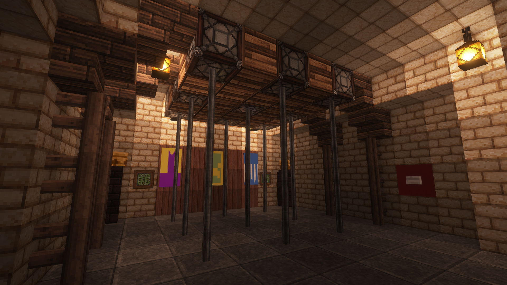
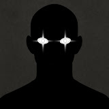

FBM - Mobile
Bienvenue
Retrouvez ici quelques visuels
Vue du dessus

à l'arrivé du fort

L'échiquier

la salle des machines

Morpion
Participations
Présentation de FBM
Bonjour à tous et à toutes
et bienvenue sur le site du Projet Fort Boyard Minecraft Vanilla ! Un Serveur dédié à des émissions Fort Boyard sur minecraft sans mods pour offrir une expérience de jeu optimal et accessible à tout les joueurs. Un fort Boyard Amélioré Chaque Année et des techniques uniques adapté au serveur Vanilla , mais aussi une passion transmise dans sa construction mais aussi dans les tournages avec les différents joueurs !
Tentez L'aventure Fort Boyard Minecraft Dès Maintenant !
L'équipe

Glooper99
fondateur du projet
fondateur du projet

Natyan
Co-Fondateur et STAFF
Co-Fondateur et STAFF

Arkkey
Encadrement et STAFF
Encadrement et STAFF
Calendrier des manifestations
20 juillet 2025 : Planing en cours de rédaction, nous vous tiendrons informé.